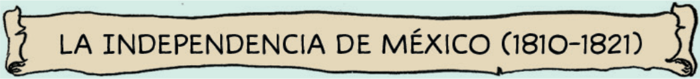

¿En qué etapa del movimiento de Independencia participó Morelos?
¿Qué otros insurgentes participaron en la segunda etapa?
¿Qué documento se redactó en el Congreso de Chilpancingo?
¿Cuál fue una de las aportaciones escritas de Morelos?
¿Cómo se le llamó a Morelos después del Congreso de Chilpancingo?